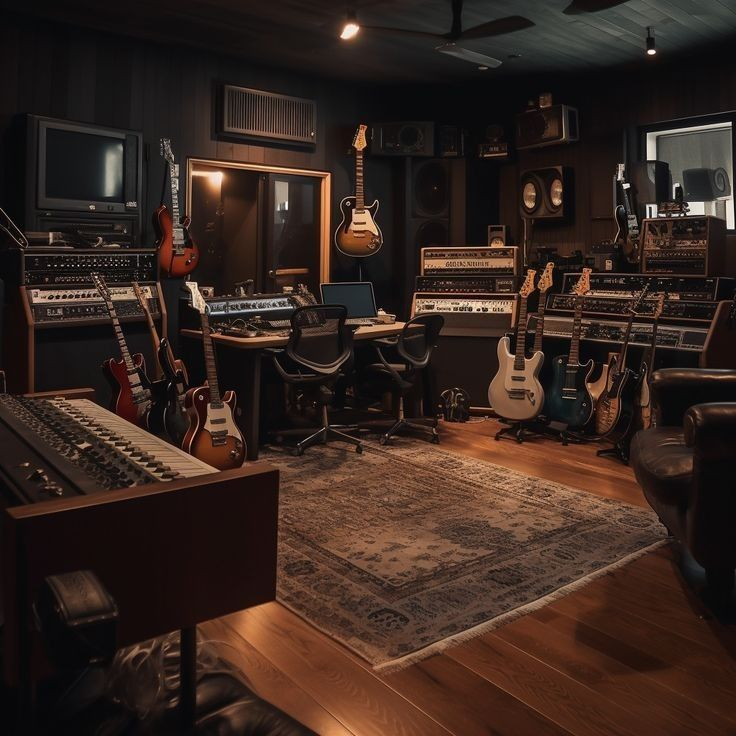
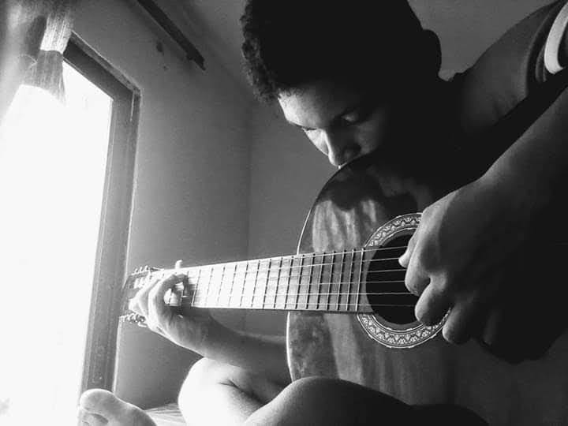
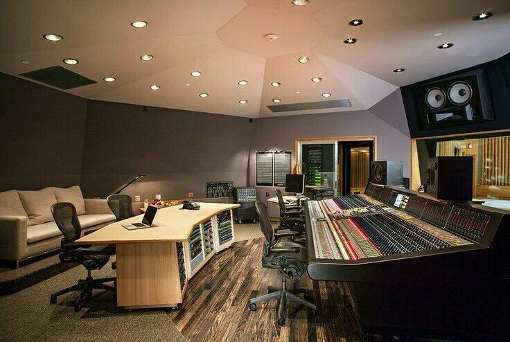
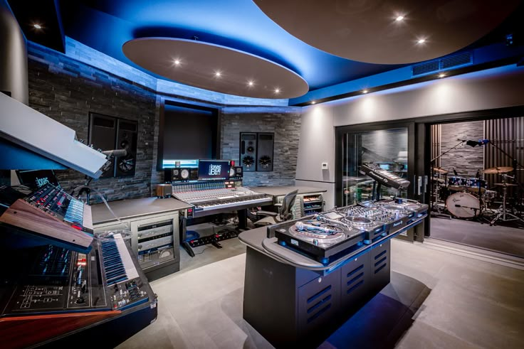

Producción Musical
En esta sección mostramos un equipo de producción de alta calidad.
Buscamos eficacia al momento de mezclar y aprovechar el tiempo al máximo.
Zona 8 es una de las mejores disqueras actualmente.
Sueños Rotos
Mis sueños en la música estuvieron a punto de llegar a su fin debido a una gran frustración.
Se le conoce como frustración musical: cuando sientes que tu carrera no despega y pierdes la motivación.
Sin embargo, tengo dos angelitos muy especiales, y uno de ellos es mi abuelo.
Él me aconsejó y me motivó a seguir luchando por mis sueños. Cuando no tenía instrumentos, buscó la manera de regalarme uno para verme feliz.
En la vida, muchas veces ni tu propio padre te ayuda... pero solo tú decides si rendirte o seguir adelante.
Historia y Esperanza
Esta es la historia de un niño lleno de sueños, que nunca se ha rendido.
Ha luchado contra todos los obstáculos posibles, pero siempre mantiene viva la esperanza de alcanzar el éxito.

Acerca de Nosotros
Zona 8 Music nace del corazón y la lucha de un joven soñador que, a pesar de venir desde abajo, nunca dejó que las circunstancias definieran su destino.
Creció entre carencias, pero con el alma llena de ritmo y una visión clara: vivir de la música y ayudar a otros a hacerlo también.
Sin estudios formales ni equipos de lujo, empezó con lo que tenía: su creatividad, su voz y muchas ganas. Hoy, esta productora es símbolo de talento emergente, de lucha constante y de calidad sonora.
Buscamos impulsar artistas nuevos, crear sonidos auténticos y dejar huella en la industria musical.
En Zona 8 no solo producimos música... producimos futuro.
Tipos de Producción
- 🎧 Producción Instrumental: Beats personalizados en géneros como reguetón, trap, hip-hop, y más.
- 🎤 Grabación Vocal Profesional: Cabinas acústicas y micrófonos de alta fidelidad.
- 🎚️ Mezcla y Masterización: Para un sonido nítido y profesional, listo para cualquier plataforma.
- 📀 Producción de EPs y Álbumes: Desarrollo de proyectos musicales completos con identidad visual.
- 📹 Producción Audiovisual: Videoclips, visualizers y contenido para redes. 
Niveles de Producción
- 🔰 Nivel Básico: Beat personalizado, grabación vocal y mezcla simple.
- 🚀 Nivel Intermedio: Beats más complejos, mezcla y masterización estándar.
- 👑 Nivel Premium: Producción avanzada, masterización pro y estrategia de lanzamiento.
- 🌍 Nivel Artista: Producción integral, marca personal y promoción digital. 